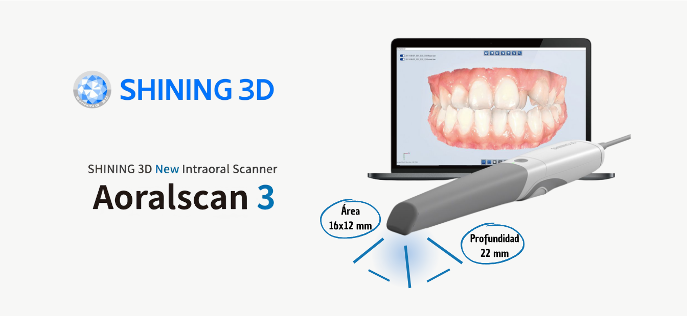
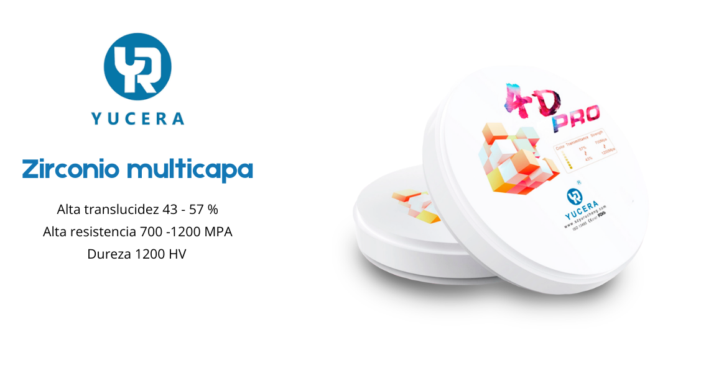
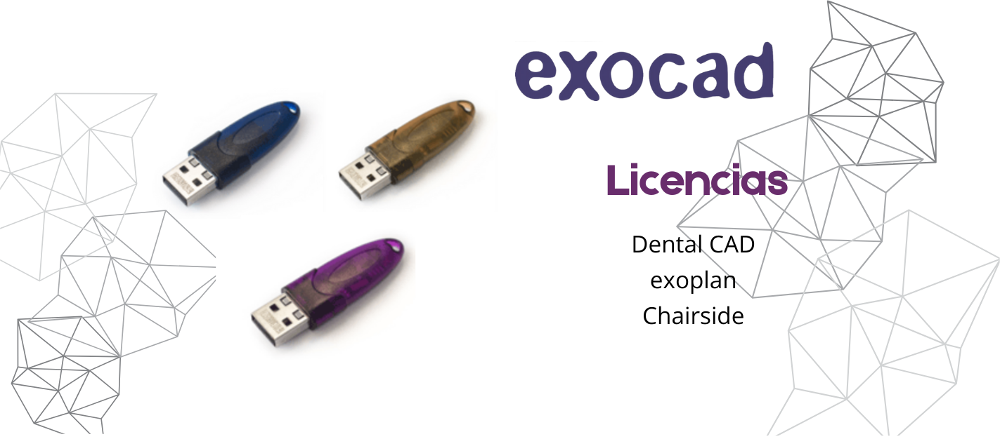
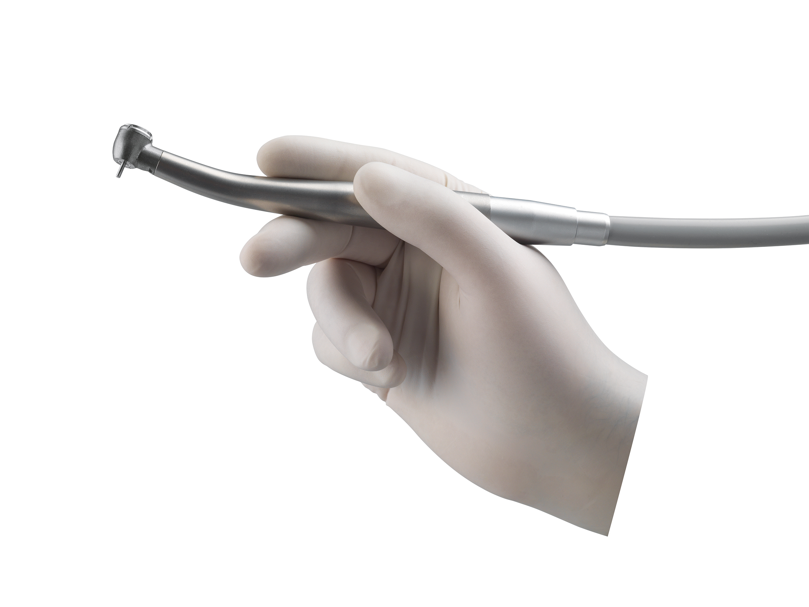
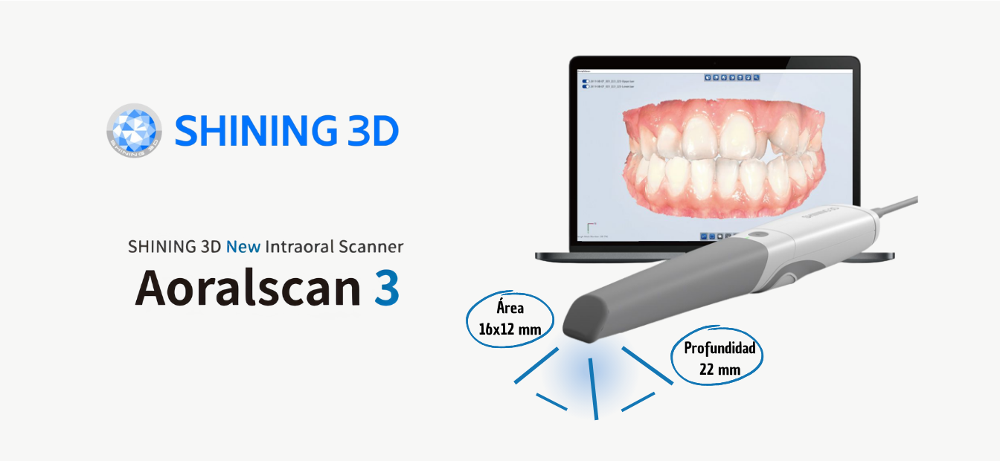
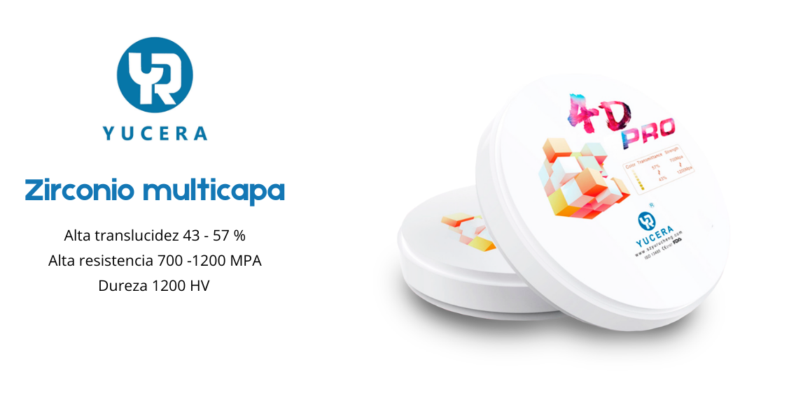
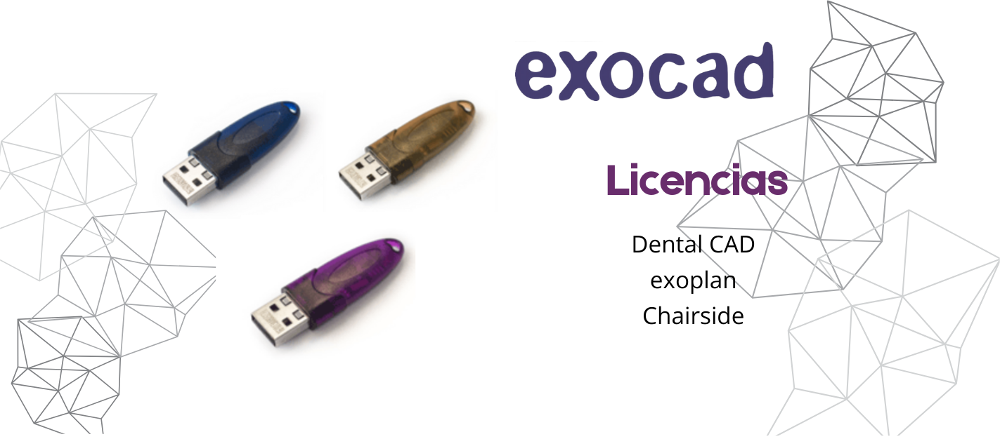
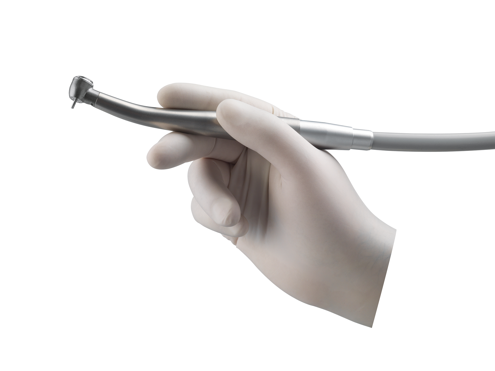
Especialidades
Trayectoria
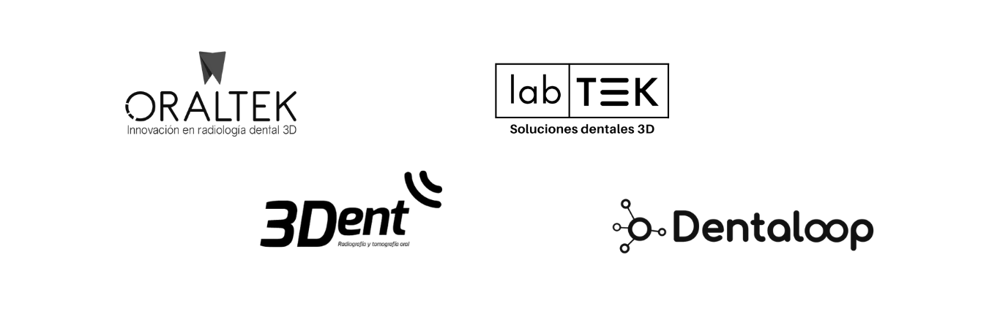
Productos detacados
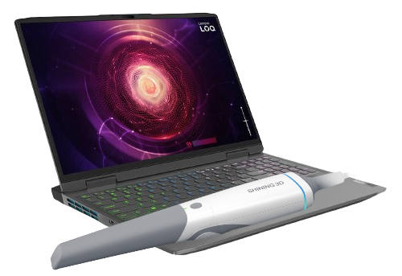
AoralScan 3
Escáner intraoral de consultorio: Ofrece precisión, calidad de imagen y velocidad de captura excepcionales.
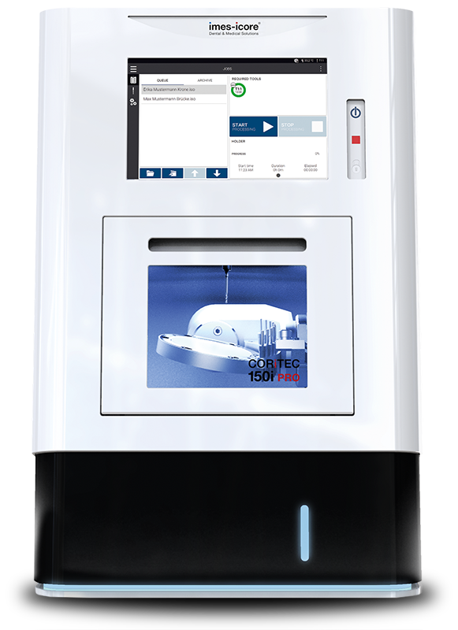
Fresadora Imes Icore 150i
Fresadora estable y precisa para discos y bloques. Su diseño de fundición monobloque garantiza estabilidad y mecanizado preciso.

 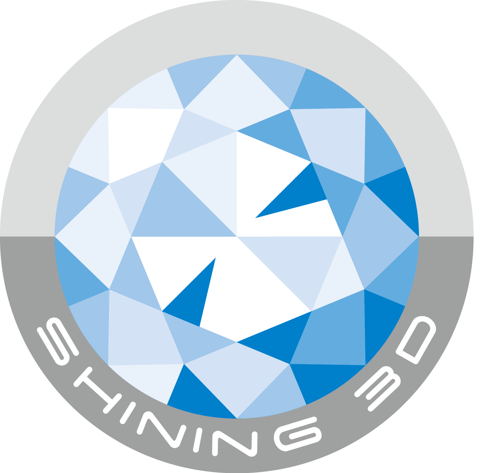
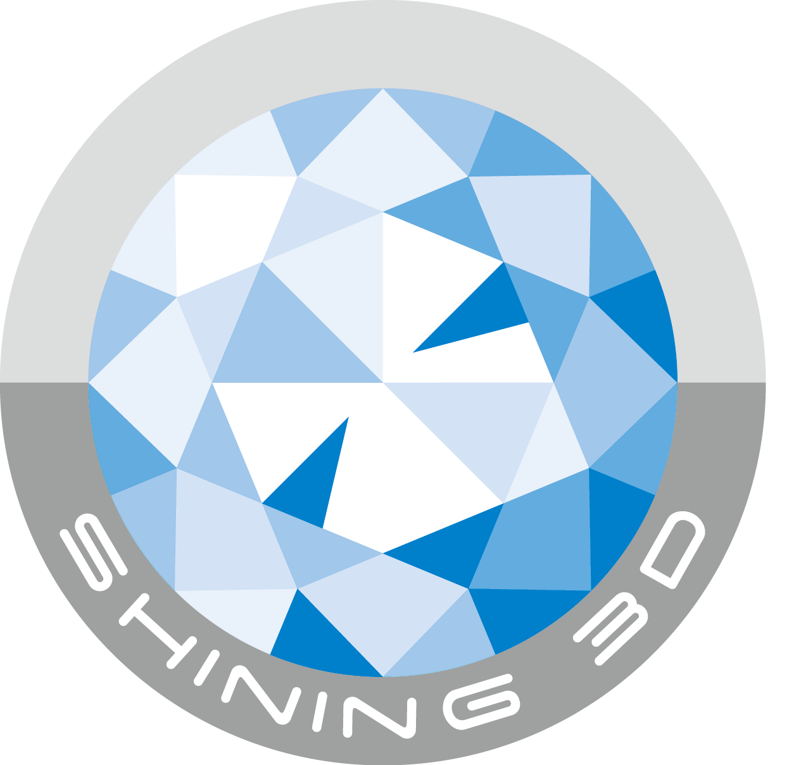